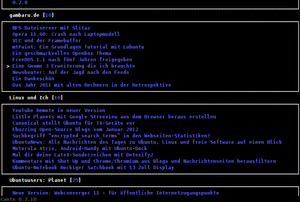
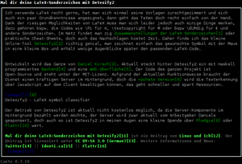

Canto
Dieser Artikel wurde für die folgenden Ubuntu-Versionen getestet:
Ubuntu 16.04 Xenial Xerus
Ubuntu 14.04 Trusty Tahr
Zum Verständnis dieses Artikels sind folgende Seiten hilfreich:
Canto  ist ein leichtgewichtiger Feedreader für die Kommandozeile bzw. Konsole. Das Programm ist der Nachfolger von NRSS und wurde wie dieses von Jack Miller geschrieben. Canto wurde mit Python erstellt und nutzt die freie Programmbibliothek ncurses. Es steht unter der GPLv2-Lizenz .
ist ein leichtgewichtiger Feedreader für die Kommandozeile bzw. Konsole. Das Programm ist der Nachfolger von NRSS und wurde wie dieses von Jack Miller geschrieben. Canto wurde mit Python erstellt und nutzt die freie Programmbibliothek ncurses. Es steht unter der GPLv2-Lizenz .

Canto verfügt über einen Funktionsumfang, der dem vieler grafischer Feedreader nicht nachsteht und ihn teilweise sogar übertrifft: Canto verwendet feedparser und unterstützt so u.a. RSS und Atom. Es ist UTF8-fähig und erlaubt den Im- und Export aus und in OPML-Dateien. Zudem ist Canto sehr umfangreich konfigurierbar. Da Canto wenig Ressourcen benötigt und ohne XServer auskommt, ist es sehr gut für ältere Computer geeignet.
Das Motto von Canto, in Anlehnung an Mutt, lautet: „An RSS/Atom newsreader that sucks less.“ Neben großer Flexibilität ist das Hauptziel von Canto, die Feeds möglichst effizient darzustellen. Dazu zeigt Canto die Überschriften aller Artikel der Feeds an – es ist also nicht notwendig, erst einen Feed zu öffnen, um die entsprechenden Artikelüberschriften zu sehen.
Installation¶
Canto ist bis einschließlich Ubuntu 14.04 in den offiziellen Paketquellen enthalten. Folgendes Paket muss installiert werden [1]:
canto (universe)
 mit apturl
mit apturl
Paketliste zum Kopieren:
sudo apt-get install canto
sudo aptitude install canto
Fremdquelle¶
Die aktuelle Version kann über eine Fremdquelle installiert werden. Diese unterstützt auch neuere Ubuntu-Versionen, aber nur 64-bit-Systeme.
Um aus der Fremdquelle zu installieren, muss man die folgenden Paketquellen freischalten:
Hinweis!
Zusätzliche Fremdquellen können das System gefährden.
deb http://codezen.org/debian VERSION main
Um die Fremdquelle zu authentifizieren, kann man
entweder den Signierungsschlüssel herunterladen  und in der Paketverwaltung hinzufügen oder folgenden Befehl ausführen:
und in der Paketverwaltung hinzufügen oder folgenden Befehl ausführen:
wget -q http://codezen.org/static/canto-pub.gpg -O- | sudo apt-key add -
Nach dem Aktualisieren der Paketquellen kann folgendes Paket installiert werden:
python3-canto-curses (Fremdquelle)
mit apturl
Paketliste zum Kopieren:
sudo apt-get install python3-canto-curses
sudo aptitude install python3-canto-curses
Bedienung¶
 Canto besteht aus zwei Programmteilen: einem Programm zum Herunterladen der Feeds und dem eigentlichen RSS-Reader. Neuere Versionen (aus der o.g. Fremdquelle) werden mit dem folgenden Befehl gestartet [2]:
canto-curses
Bei der Installation aus den offiziellen Paketquellen wird das Programm zum Herunterladen der Feeds im Terminal (oder als Cronjob) mit folgendem Befehl gestartet:
canto-fetch
Sind die Feeds heruntergeladen, kann der Reader mit folgendem Befehl gestartet werden:
canto
Soll Canto erst Feeds herunterladen und dann automatisch starten, kann die Option „-u“ genutzt werden.
| Start-Optionen | |
| Option | Beschreibung |
-u | Feed-Update und Start des Readers |
-o | Exportiere die Feedliste als OPML-Datei nach stdout |
-i [PFAD] | Importiere die Feeds einer OPML-Datei im angegebenen Pfad |
-r [URL] | Füge den Feed mit der angegebenen URL hinzu |
-l | Zeige eine Liste aller konfigurierten Feeds an |
Weitere Optionen sind der Manpage zu entnehmen.
Beim ersten Start von Canto legt das Programm automatisch die erforderlichen Konfigurationsdateien an. Allerdings muss nach dem ersten Start noch die Datei ~/.canto/conf.py.example im Homeverzeichnis in ~/.canto/conf.py umbenannt werden.
In diese Datei ~/.canto/conf.py werden nutzerspezifische Konfigurationen und Feed-Einstellungen eingetragen, die Feeds selbst werden in der Datei ~/.canto/feeds gespeichert. Die Konfiguration erfolgt durch Python-Befehle. Mehr zum Thema findet man im Benutzerhandbuch .
Hinzufügen von Feeds¶
Zum Hinzufügen von Feeds gibt es zwei Möglichkeiten: Automatisch durch den Import einer OPML-Datei oder manuell durch das Ergänzen der Konfigurationsdatei.
Import aus OPML-Datei¶
Um eine Feedliste aus einer OPML-Datei zu importieren, wird der folgende Befehl benutzt:
canto -i /PFAD/ZUR/OPML-DATEI
Beispiel:
canto -i ~/Downloads/Feedliste.opml
Manuelles Hinzufügen¶
Um einen Feed manuell hinzuzufügen, öffnet man mit einem Editor [4] die Datei ~/.canto/conf.py und ergänzt die Feed-Adresse. Die Syntax sieht dabei wie folgt aus:
add("URL zu Feed 1", tags=["Name von Feed 1/Tags von Feed 1"])
add("URL zu Feed 2", tags=["Name von Feed 2/Tags von Feed 2"])Beispiel:
add("http://codezen.org/canto/feeds/latest", tags=["Canto: latest"])
add("http://www.gambaru.de/blog/?feed=rss2", tags=["gambaru.de"])
add("http://linuxundich.de/de/feed/", tags=["Linux und Ich"])
add("http://planet.ubuntuusers.de/feeds/full/25/", tags=["Ubuntuusers: Planet"])Steuerung¶
Canto wird standardmäßig vollständig über die Tastatur gesteuert. Die Navigation orientiert sich an den Konventionen von Vim, man kann also bspw. einfach mit J nach unten und mit K nach oben navigieren. (Wobei auch die Tasten ↓ und ↑ funktionieren.)
Wichtige Tastenkürzel sind:
| Canto-Tastenbelegung | |
| Taste(n) | Funktion |
| Tastenbelegung in allen Modi: | |
| Strg + R | Lies Feeds neu ein („Force update“) |
| H | Hilfe (Verlassen der Hilfsseite mit Q ) |
| Q | Beende Canto |
| Tastenbelegung im Überschriften-Modus: | |
| Sieh ausgewählten Artikel im Lesemodus an | |
| J oder ↓ | Gehe zum nächsten Artikel der Ansicht |
| K oder ↑ | Gehe zum vorigen Artikel der Ansicht |
| G | Lies ausgewählten Artikel im externen Browser |
| L | Gehe zum nächsten Feed |
| O | Gehe zum vorigen Feed |
| . | Gehe zum nächsten ungelesenen Artikel |
| , | Gehe zum vorigen ungelesenen Artikel |
| F | Suche: Markiere alle Artikel, die dem Suchbegriff entsprechen |
| M | Markiere den Artikel |
| N | Gehe zum nächsten markierten Artikel |
| P | Gehe zum vorigen markierten Artikel |
| → | Markiere ausgewählten Artikel als gelesen |
| ← | Markiere ausgewählten Artikel als ungelesen |
| ⇧ + R | Markiere alle Artikel als gelesen |
| ⇧ + U | Markiere alle Artikel als ungelesen |
| Tastenbelegung im Artikel-Lesemodus: | |
| Verlasse den Lesemodus | |
| G | Rufe den (durch eine Zahl bezeichneten) Link im externen Browser auf (die Zahlen stehen jeweils neben den aufzurufenden Links). Es können auch mehrere Links gleichzeitig aufgerufen werden. Beispiel: G 1-3, 6 ⏎ ruft die Links 1,2,3 und 6 in einem externen Browser auf. |
| N | Gehe zum nächsten Artikel |
| P | Gehe zum vorigen Artikel |
| L | Zeige/verberge Links |
Weitere Befehle sind der Manpage zu entnehmen. Die Befehle können beliebig den eigenen Wünschen angepasst werden.
Filter¶
Canto unterstützt komplexe Filtermöglichkeiten. Die Filter können global gültig sein oder sich auf ausgewählte Feeds bzw. bestimmte Tags beziehen. Ein einfaches Beispiel für einen globalen Filter ist die Möglichkeit, in der Datei ~/.canto/conf.py festzulegen, dass Canto nur ungelesene Artikel angezeigt:
filters=[show_unread]
Filter lassen sich auch bestimmten Tasten bzw. Tastenkombinationen zuweisen. Der folgende Eintrag in die Datei ~/.canto/conf.py belegt bspw. die Tasten 1 , 2 und 3 mit den Filtern „Zeige nur die ungelesenen Artikel“, „Zeige nur die markierten Artikel“ und „Entferne alle Filter“.
keys['1'] = set_filter(show_unread) keys['2'] = set_filter(show_marked) keys['3'] = set_filter(None)
Mehr zum Thema „Filter“ und zu den verschiedenen Filterarten, die Canto anbietet, findet man unter Canto Configuration .
Einstellungen¶
Externe Programme¶
In der Konfigurationsdatei kann auch festgelegt werden, von welchen Programmen Canto Nutzerbefehle ausführen lässt. Mit dem folgenden Befehl werden, wenn ein XServer läuft, bspw. Links in Opera, MP3- und MP4-Dateien mit mplayer sowie PDF-Dateien mit Okular geöffnet. Alternativ, d.h. ohne laufenden XServer, werden die Links an elinks weitergeleitet.
if os.getenv("TERM") == "linux":
link_handler("elinks \"%u\"", text=True)
image_handler("feh \"%u\"", text=True, fetch=True)
else:
link_handler("opera \"%u\"")
image_handler("feh \"%u\"", fetch=True)
link_handler("mplayer \"%u\"", ext="mp3")
link_handler("mplayer \"%u\"", ext="mp4")
link_handler("okular \"%u\"", fetch=True, ext="pdf")Alle genannten Programme müssen natürlich installiert sein.
Tastenkürzel konfigurieren¶
Tastenkürzel können in Canto beliebig konfiguriert werden. Beispiel: Die Einstellung
reader_keys['w'] = wget_link("/PFAD/ZUM/DOWNLOADVERZEICHNIS")erlaubt es, durch Drücken von W den Inhalt eines (anzugebenden) Links mittels wget in den Download-Ordner zu speichern.
Optik¶
Die Gestaltung von Canto sowie das Scroll-Verhalten lassen sich recht frei konfigurieren. Mehr zu diesem Thema findet man wieder im Benutzerhandbuch .
Beispielkonfiguration¶
Eine einfache Konfigurationsdatei ~/.canto/conf.py könnte wie folgt aussehen („#“ leitet einen Kommentar bzw. einen auskommentierten Befehl ein):
from canto.extra import *
import os
# Feedliste:
add("http://codezen.org/canto/feeds/latest", tags=["Canto: latest"])
add("http://www.gambaru.de/blog/?feed=rss2", tags=["gambaru.de"])
add("http://linuxundich.de/de/feed/", tags=["Linux und Ich"])
add("http://planet.ubuntuusers.de/feeds/full/25/", tags=["Ubuntuusers: Planet"])
# Lösche ungelesene Artikel nie:
never_discard("unread")
# Zahl der angezeigten Zeilen im Lesemodus:
# reader_lines = 25
# Programmverknüpfungen:
if os.getenv("TERM") == "linux":
link_handler("elinks \"%u\"", text=True)
image_handler("feh \"%u\"", text=True, fetch=True)
else:
link_handler("opera \"%u\"")
image_handler("feh \"%u\"", fetch=True)
link_handler("mplayer \"%u\"", ext="mp3")
link_handler("mplayer \"%u\"", ext="mp4")
link_handler("okular \"%u\"", fetch=True, ext="pdf")
# Terminaltitel wird angezeigt:
select_hook = set_xterm_title
end_hook = clear_xterm_title
# Spaltenbreite:
def my_resize_hook(cfg):
cfg.columns = cfg.width / 70
resize_hook = my_resize_hook
# Zeige (im Überschriften-Modus) nur ungelesene Artikel an:
filters=[show_unread]
# Bei unkommentierter nächster Zeile werden die Links in den Artikel standardmäßig angezeigt:
# keys[' '] = ["reader","toggle_show_links"]
# Seitenweises Scrollen:
cursor_type = "edge"
cursor_scroll = "page"
cursor_edge = 0
# Belegung der Taste w mit einer Funktion zum Herunterladen der verlinkten Inhalte (durch wget):
reader_keys['w'] = wget_link("/home/BENUTZERNAME/Downloads")Problembehebung¶
Will man Canto schnell und in einer bestimmten Größe starten, empfiehlt es sich, einen speziellen Startbefehl zu erstellen und diesen auf ein Tastenkürzel zu legen. Ein solcher Startbefehl könnte wie folgt aussehen (hier für den Start im Terminal-Emulator ROXTerm ):
Canto 0.8 oder neuer:
roxterm --geometry=96x40+90+31 --title=Newsfeeds -e canto-curses
Canto 0.7:
roxterm --geometry=96x40+90+31 --title=Newsfeeds -e canto -u
Links¶
Canto – Wikipedia
canto, ein RSS Reader
 – Blogbeitrag, 03/2012
– Blogbeitrag, 03/2012Canto, ein Feedreader für die Konsole
– Blogbeitrag, 03/2011Feedreader
 Übersichtsartikel
Übersichtsartikel
- Erstellt mit Inyoka
-
 2004 – 2017 ubuntuusers.de • Einige Rechte vorbehalten
2004 – 2017 ubuntuusers.de • Einige Rechte vorbehalten
Lizenz • Kontakt • Datenschutz • Impressum • Serverstatus -
Serverhousing gespendet von